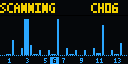
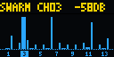

Chapter 5
Find the swarm & read its mind
The panels pick a channel at power-on, so first you have to find it. Then you watch the swarm's own chatter stream past and learn to read, at a glance, what it is doing — which is exactly the knowledge you need to attack it precisely.
5.1 Scan for the channel
In SNIFF mode, run:
FIND # scan every channel, then lock onto the swarm'sThe board sweeps channels 1–13, counts how many FLK1 (swarm) frames it hears on each, then tunes to the busiest. On the OLED you'll see the scan, then the result:


The same result comes over serial, so a script can read it too:
{"cmd":"scan","done":true,"swarm_channel":3,"channel":3}Use SCAN instead of FIND to measure without
retuning, or CH 3 to jump straight to a channel you already know. With ~25 radios in
the room the band is noisy — that's realistic; the swarm bars still stand out.
5.2 Watch the traffic
Once locked on, make sure the stream is on:
VERBOSE # per-frame JSON on (QUIET turns it off)Now the swarm's messages scroll past, one JSON object per line. The three kinds from chapter 4 look like this (trimmed for clarity):
{"kind":"TELEM","label":"A1","x":34,"y":-12,"heading":270,"active":true,"seq":4213}
{"kind":"CONTACT","id":0,"x":120,"y":-40,"cls":"RED","conf":200,"active":true,"seq":88}
{"kind":"CLAIM","label":"B2","contact":0,"role":"LEAD","dist":55,"seq":12}5.3 Read the swarm's mind
Put those three lines together and you can narrate exactly what the swarm is thinking:
Worked read. Node A1 is airborne at (34, -12) heading
west. There is a RED contact in slot 0 at (120, -40) the swarm is fairly
sure about (confidence 200). B2 has claimed LEAD on it at range 55 — so B2 is the
attacker; others will fall in as support. The swarm has found a target and is organising around
it.
Three questions answer almost everything, and you can read all three off the stream:
- Who is flying? — the
TELEMlines with"active":true. - Is there a target? — any
CONTACTwith real confidence, and its class. - Who is LEAD? — the
CLAIMwith"role":"LEAD"and the shortestdist.
For a running tally rather than the firehose, use QUIET then STATS:
STATS
{"cmd":"stats","mode":"sniff","flk1":18422,"flk2":291,"seen":12}Notice the flk2 counter ticking up too: that is the swarm's authenticated command
traffic. You can see it, but as chapter 4 explained, you cannot forge it.
5.4 Grab bytes to reuse
When you see a frame you'd like to replay later, capture its raw bytes:
RAW 3 # dump the next 3 frames as raw hexEach dumped frame prints its hex, which you can hand straight to SEND <hex>
to retransmit it verbatim — the basis of the replay attack in the next chapter.
Identify the panels. Switch to the signal grid
(PAGE 1) and watch which cell is strongest as you move the board — that tells you
which physical panel is which A1–D4, so when you forge a contact "on
top of" a drone you know where to put it.